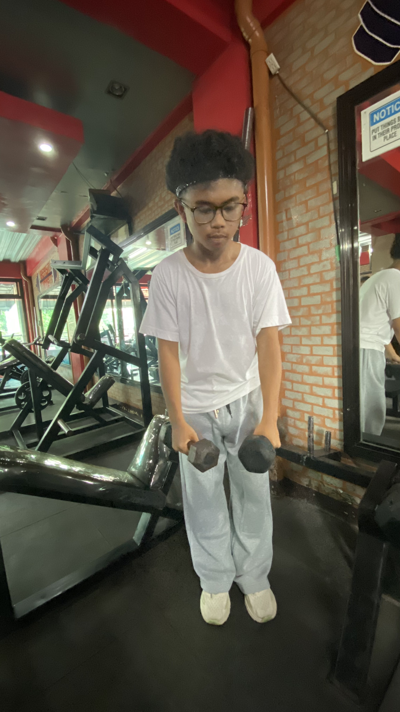
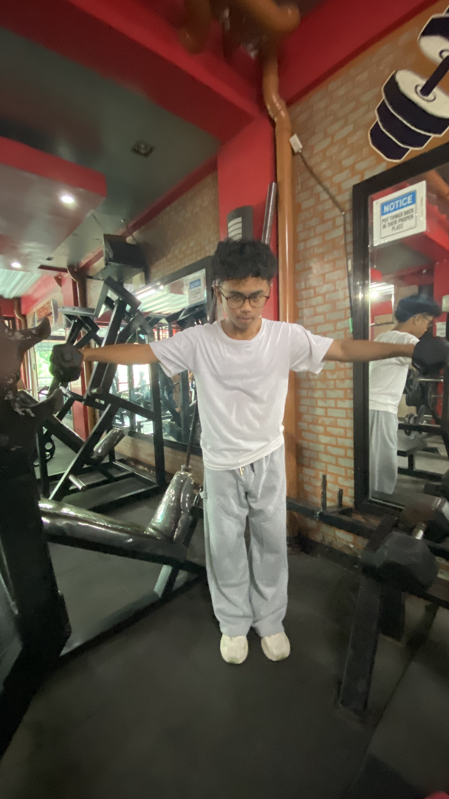
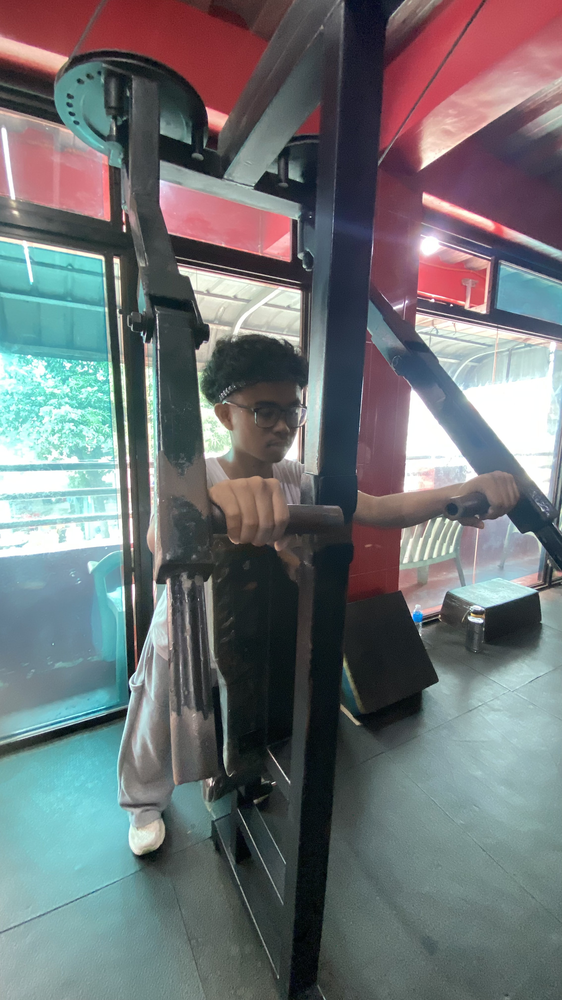
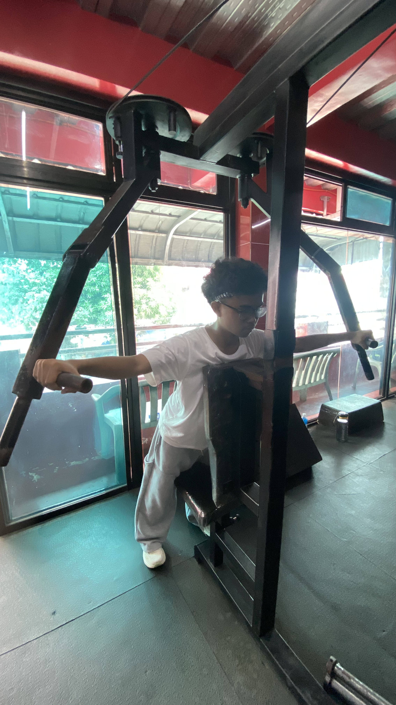
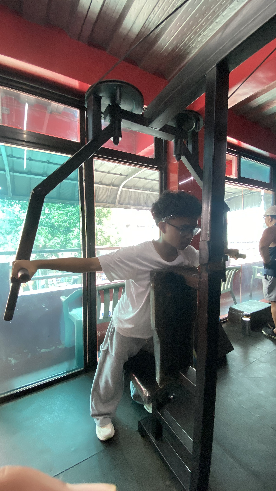
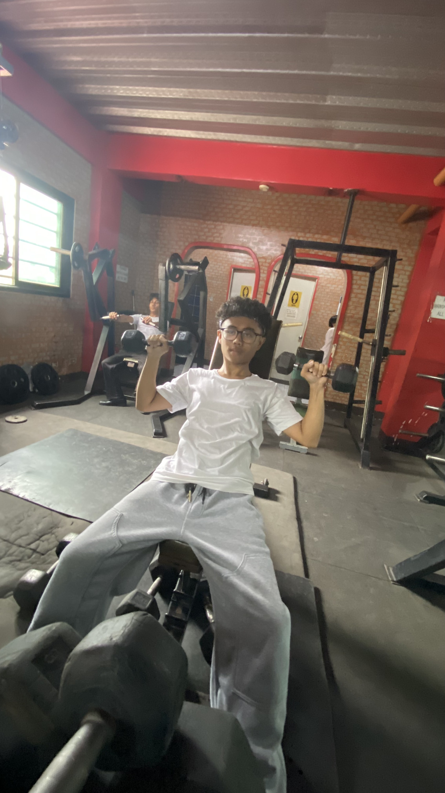
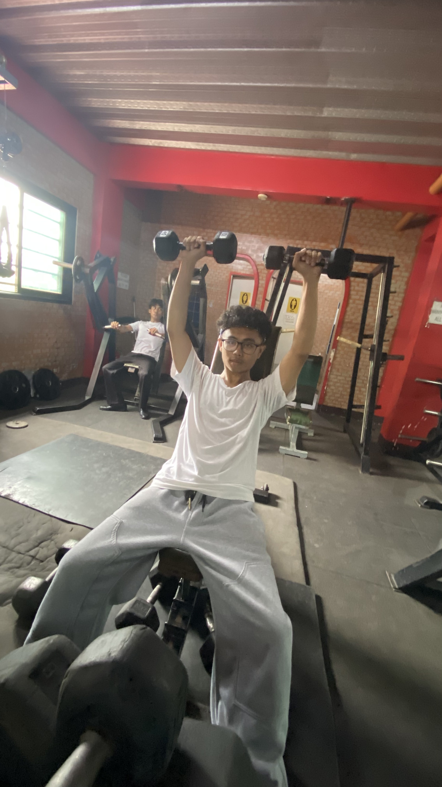

LATERAL RAISE


Lateral raises target the side shoulder muscles by lifting the arms outward with control. They help develop shoulder width while using a focused range of motion.
REAR SHOULDER



Rear shoulder exercises strengthen the back of the shoulders and support balanced shoulder development. They can improve posture and help balance pressing movements.
SHOULDER PRESS


The shoulder press builds the shoulders by pressing weight upward from shoulder level. It also engages the triceps and upper chest during the pressing motion.